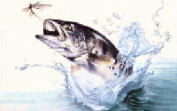
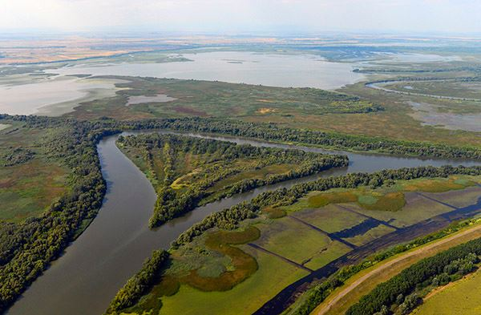

|
|
Ungarn - Wildnis zwischen Donau und
Theiss |
|
Angelschein erwerben in
Ungarn |
Um
in Ungarn angeln zu dürfen, wird ein staatlicher Angelschein
und
eine für das gegebene Gewässer gütige
territoriale
Genehmigung verlangt. Diese Papiere sind bei den Angelvereinen und
überall dort erhältlich, wo auch die Angelscheine
gelöst
werden - in ländlichen Gegenden, oft in Einkaufszentren, am
besten
vor Ort fragen!
|
Ausländer
können den staatlichen Angelschein nach Vorlage des
Reisepasses
kaufen - der deutsche Personalausweis genügt. Dieser
Angelschein
ist beschränkt, einerseits räumlich auf bestimmte
Gewässer, andererseits zeitlich in Form eines Tages-, Wochen-
oder Jahresangelscheines.
Wie die
Ungarn den Angelschein erwerben:
Ein Anfänger muss eine Anglerprüfung ablegen und
danach den
staatlichen Angelschein auslösen. Voraussetzung für
eine
Genehmigung ist auch die Mitgliedschaft in einem Angelverein. |
 |
Die Anglerprüfung kann bei einem beliebig gewählten
Anglerverein abgelegt werden, hier bekommt man auch genaue
Informationen über die Angelbedingungen. Die Mitglieder des
Vereins bekommen den staatlichen Angelschein und bei Bedarf die
territoriale Genehmigung für bestimmte Gewässer.
Die Regeln und die Anordnung des Fischerei- und Angelgesetzes
bezüglich der Fangmenge, Fischgröße, und
Fangzeiten
stehen auf dem staatlichen Angelschein. Auf den territorialen
Genehmigungen stehen das Gültigkeitsdatum und die speziell
für die gegebenen Gewässer gültige
Vorschriften und
Beschränkungen.
Wer auf Rekordfang wartet, ist auf der Jagd nach einem
kapitalen Wels, der auch Waller genannt wird. In Ungarn sind es der
Plattensee bzw. Balaton, die gesamte Theiß, so auch der
Theiß See, die Körös, Raab und Donau,
welche durch Fänge von kapitalen Welsen Aufsehen erregten.
|
| |
Der Theiß-See ist ein
Angelparadies ungeahnter Größe und Vielfalt:
|
|  |
|
| |
| |
| |
Ungarn-Tourist Team

|
| |
 |
| |
|


 Sie wollen endlich einmal
zum Plattensee, der von den
Ungarn oft "ungarisches Meer" oder einfach nur Balaton genannt wird?
Sie wollen endlich einmal
zum Plattensee, der von den
Ungarn oft "ungarisches Meer" oder einfach nur Balaton genannt wird?